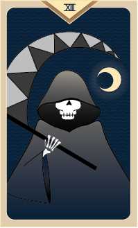

Death

Like your Tarot card, Death, you welcome transformation. You often shed your skin like a snake, seeking to release your spirit and be reborn. Because you are able to detach yourself from the ties that bind others, it's easy for you to change your identity, making you the mysterious person everyone wants to figure out.